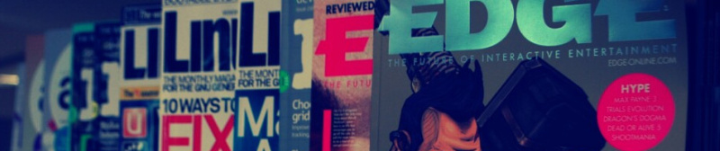

Bibliotektjenesten ved NITH jobber med tilgjengeliggjøring av litteratur og veileding av studenter og ansatte ved innhenting av informasjon. I tillegg kan biblioteket tilby inspirasjon, avkobling og underholdning gjennom tidsskrifter, en brettspillsamling, et utvalg tegneserier og spillrommet Battlestation.

Biblioteket er i samme lokale som studieadministrasjonen og har samme åpningstid (hverdager 09:00 - 15:00, med lunsjpause 11:30 - 12:00).
Studenter og ansatte kan låne bøker fra NITHs boksamling - og er det noe vi ikke har kan vi bestille innlån av fagbøker fra andre bibliotek. Alle studenter med gyldig studentkort ved NITH kan registrere seg som lånere. Studentkortet benyttes som lånekort. Du kan også bestille artikkelkopier, søke i diverse informasjonsdatabaser og få hjelp til å skrive litteratur- og referanselister til prosjektoppgaver.
Vi har omlag 5000 bøker i samlingen og benytter biblioteksystemet BIBSYS for å registrere bøkene. Av tidsskrifter kan vi nevne .NET, Computer Arts, Gamedeveloper, EDGE, Harvard Business Review og MSI Quarterly - med flere. Du kan søke i bokbasen vår gjennom BIBSYS Ask, eller etter tidsskriftartikler i ACM-databasen (Associaction for Computing Machinery).
Har studenter eller ansatte spesielle ønsker for materiale som bør kjøpes inn, forsøker vi å etterkomme disse ønskene så langt det er mulig.
Trenger du informasjon eller inspirasjon? Kom innom!